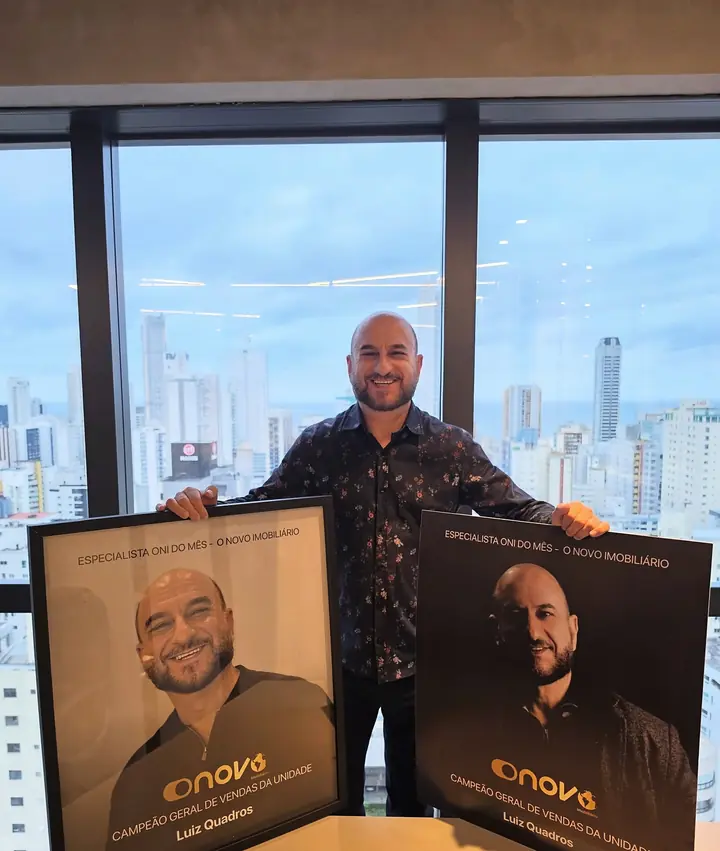
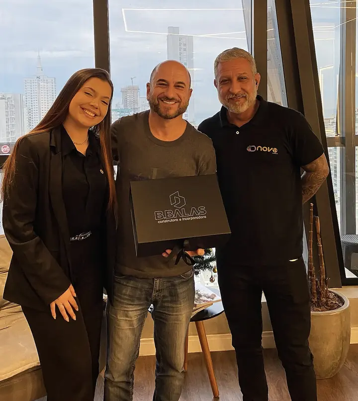

27°05′S · 48°36′W
Itapema
Orla verticalizada, lançamentos de alto padrão e uma das praias mais procuradas do litoral norte catarinense. Mercado com forte demanda de investidores de todo o Brasil.
Especialista em imóveis na planta · Itapema & Porto Belo
Curadoria de lançamentos no litoral catarinense para quem quer investir bem ou realizar o próximo endereço — da escolha da unidade à entrega das chaves.
01Resultado, não promessa
em Valor Geral de Vendas no mês de agosto de 2026. Resultado não acontece por acaso — é fruto de estratégia, constância e de saber exatamente o que cada cliente procura.
VGV · soma do valor dos imóveis vendidos no período, conforme divulgado pelo O Novo Imobiliário.
02Mais que imóveis
Comprar na planta é comprar o futuro. Antes da sua assinatura, alguém precisa conhecer a construtora, o terreno, a tabela, o bairro e o ritmo do mercado. Esse é o meu trabalho: transformar uma decisão grande em uma decisão segura.
Imóveis · Pessoas · Histórias reais
03A tese
Quem compra no lançamento acessa condições que deixam de existir quando o prédio fica pronto. Mas só faz sentido com a escolha certa.
As primeiras unidades costumam sair pelos menores valores da tabela, que tende a ser reajustada a cada fase de vendas.
Entrada, parcelas mensais e reforços diluídos ao longo da construção — sem precisar do valor total à vista.
Entre o lançamento e a entrega, o imóvel pode se valorizar — dependendo de localização, produto e mercado. Não é garantia; é análise.
No início, você escolhe andar, posição solar e vista antes de todo mundo. Depois, sobra o que ninguém quis.
04Método LQ
Objetivo (valorização, renda com locação, moradia ou veraneio), prazo, perfil de risco e fluxo de caixa. Sem isso, qualquer indicação é palpite.
Filtro dos lançamentos que fazem sentido para você: construtora, histórico de entregas, registro da incorporação, localização e produto.
Unidade certa, fluxo de pagamento, correção pelo INCC e o que acontece no saldo das chaves. Você entende cada número antes de decidir.
Condições negociadas com a construtora, conferência de documentos e assinatura — presencial ou 100% digital.
Andamento da obra, vistoria, financiamento do saldo e, se for o caso, estratégia de locação ou revenda. A venda é o começo da relação.
05Onde eu atuo
27°05′S · 48°36′W
Orla verticalizada, lançamentos de alto padrão e uma das praias mais procuradas do litoral norte catarinense. Mercado com forte demanda de investidores de todo o Brasil.
27°09′S · 48°33′W
Baía de águas calmas, ritmo mais tranquilo e vizinha de Bombinhas. Lançamentos com outro perfil de preço — ótimos para quem busca entrada estratégica e qualidade de vida.
Conectadas pela BR-101 a Balneário Camboriú e Florianópolis.
06Simulador de fluxo
Monte um fluxo típico de compra na planta. É uma simulação educativa — cada empreendimento tem a sua tabela.
07Reconhecimentos


Set 2026 · VGV
130mi
em vendas no mês de agosto de 2026, divulgado pelo O Novo Imobiliário.
08Quem é Luiz Quadros
Sou Luiz de Quadros, corretor de imóveis (CRECI-SC 77456F) e especialista em imóveis na planta em Itapema e Porto Belo. Atuo pelo O Novo Imobiliário, onde me tornei Campeão Geral de Vendas da unidade.
Meu trabalho é simples de explicar e difícil de fazer bem: entender o que você quer construir — patrimônio, renda ou um novo capítulo da sua vida — e encontrar o empreendimento que leva até lá, com números claros e sem pressa errada.
Apaixonado pela vida e conectado com a natureza, escolhi viver e trabalhar num dos trechos mais bonitos do litoral catarinense. É esse olhar que eu levo para cada cliente: pessoas, casas, sonhos, resultados.
Corretor de Imóveis · CRECI-SC 77456F
09Compromissos
Tabela, fluxo, correção e saldo explicados antes de qualquer assinatura.
Só apresento empreendimentos que passaram pela checagem de construtora, incorporação e localização.
Do primeiro contato à entrega das chaves — e depois dela.
Apresentações por vídeo e documentação digital para quem compra de outra cidade ou estado.
10Dúvidas frequentes
Não encontrou a sua pergunta? Mande no WhatsApp — eu respondo pessoalmente.
Perguntar ao LuizA segurança começa antes da assinatura: verificar o registro da incorporação no cartório de imóveis, o histórico de entregas da construtora e se o empreendimento adota o patrimônio de afetação, que separa o dinheiro da obra das demais contas da empresa. Essa checagem faz parte da curadoria.
O INCC é o índice que mede a variação do custo da construção. Durante a obra, as parcelas costumam ser corrigidas por ele. Por isso a simulação deve considerar a correção, e não apenas o valor nominal da tabela.
Em lançamentos, a remuneração do corretor normalmente já está prevista pela incorporadora no preço de tabela. Você recebe assessoria completa sem custo adicional por isso.
Sim. A apresentação dos empreendimentos pode ser feita por vídeo, e a maior parte da documentação e da assinatura pode ser digital. Você só vem a Santa Catarina quando quiser.
Depende do objetivo. Itapema concentra lançamentos de alto padrão e uma orla muito procurada; Porto Belo tem baía abrigada, ritmo mais tranquilo e lançamentos com outro perfil de preço. A resposta certa sai do diagnóstico do seu objetivo, prazo e fluxo de caixa.
Na maioria dos empreendimentos, sim. O saldo devido na entrega pode ser financiado pelo banco ou, em alguns casos, parcelado diretamente com a construtora. O ideal é planejar esse momento desde a compra.
11Vamos conversar